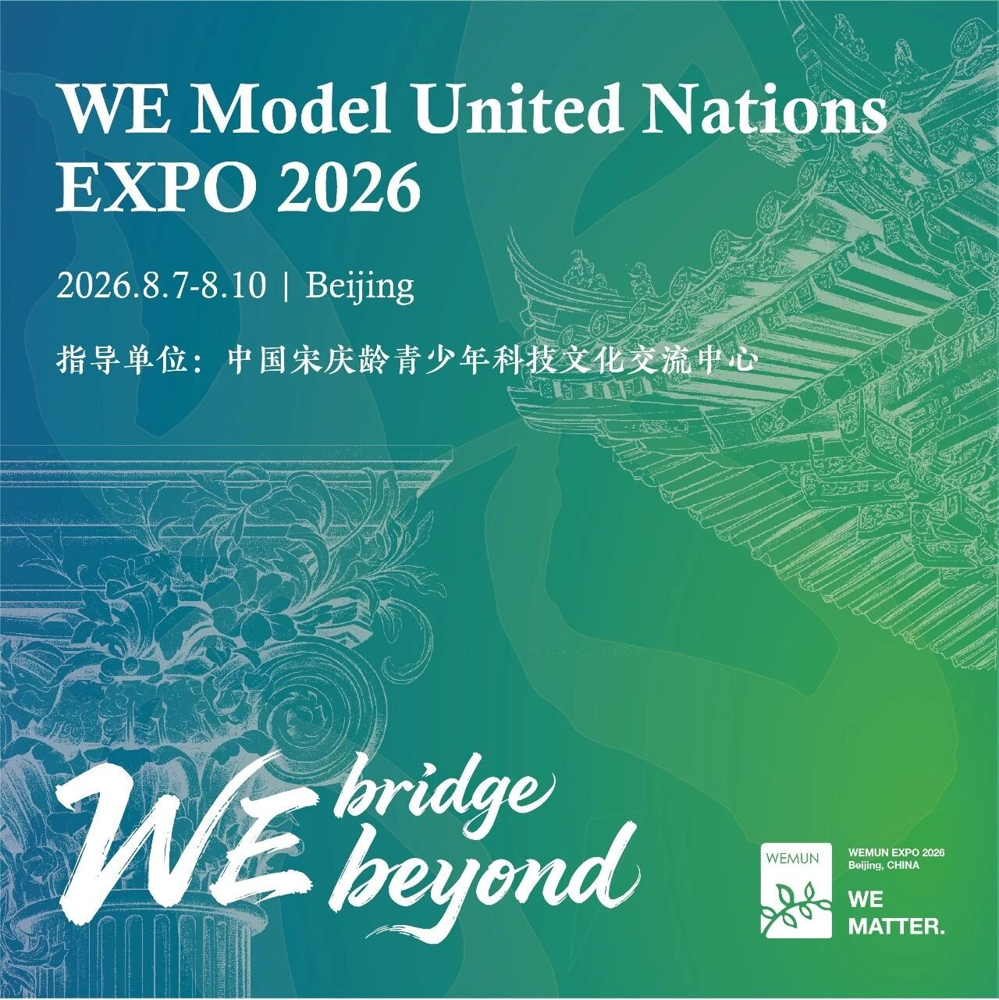
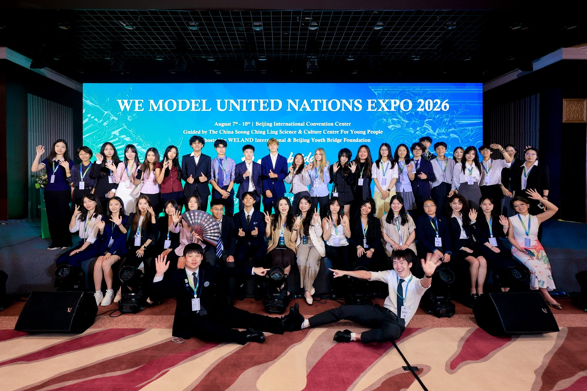
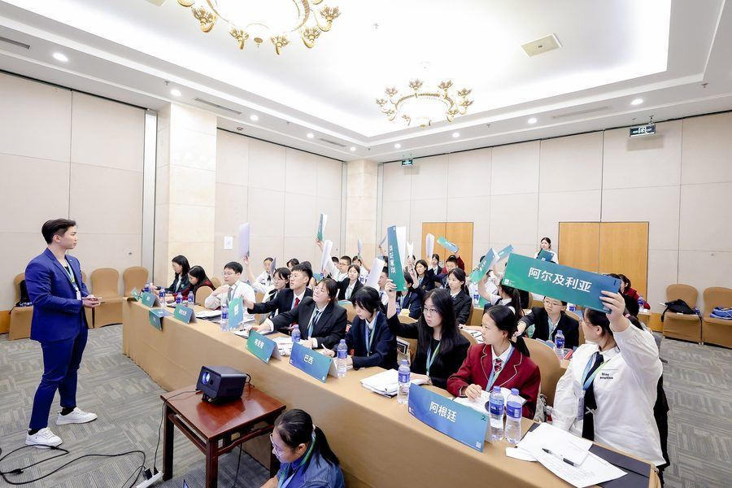
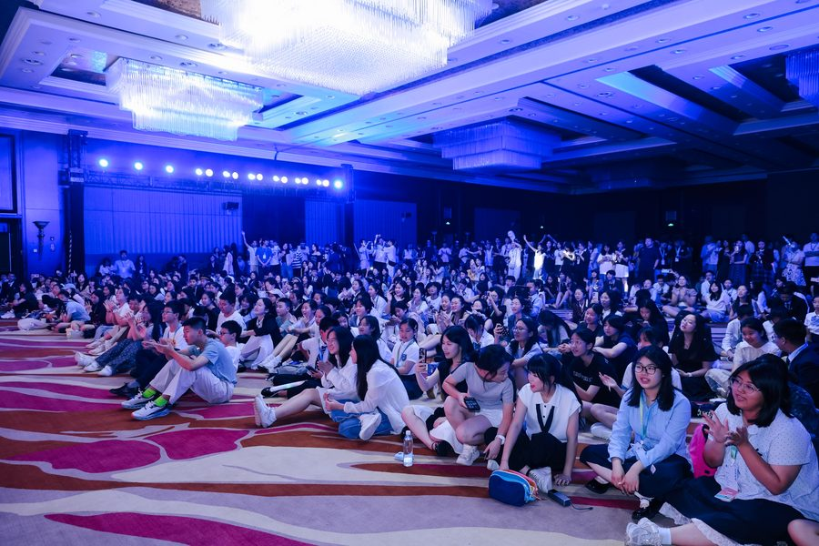
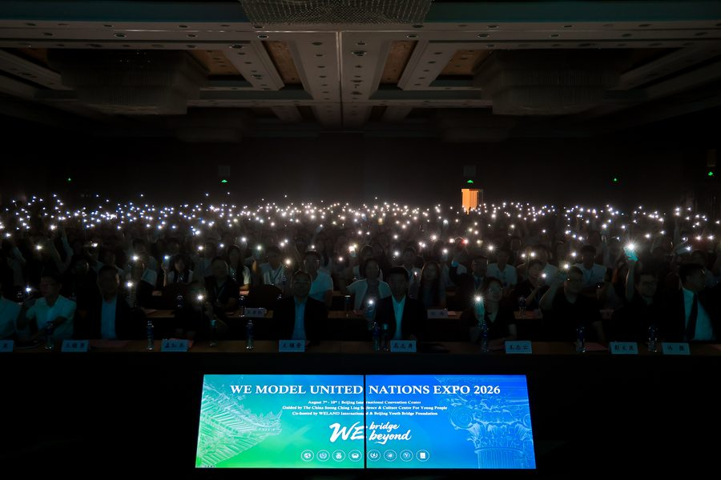
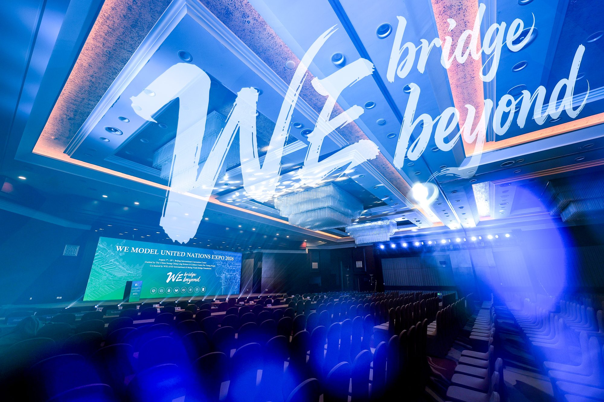

WEMUN EXPO 2026
WE Model United Nations EXPO 2026
7 to 10 August 2026 · Beijing

Welcome Letter
Dear Delegates, Faculty Advisors, and Academic Colleagues,
It is our privilege to invite you to WE Model United Nations EXPO 2026 (WEMUN EXPO 2026), convening from 7 to 10 August 2026 at the Beijing International Convention Center, with the continued guidance and support of the China Soong Ching Ling Science & Culture Centre for Young People.
Contemporary global society reflects profound interdependence alongside complex structural divisions. Information silos constrain public discourse, while reflexive polarization undermines the foundations of reasoned multilateral engagement. Facing evolving global dynamics, young scholars require intellectual rigor and the capacity to view issues beyond insular perspectives. WEMUN EXPO 2026 adopts the theme “WE bridge beyond”, encouraging delegates to transcend intellectual inertia and establish enduring bridges through principled diplomacy.
Principled diplomacy demands rigorous comprehension of the historical and structural origins behind diverse viewpoints. True multilateral progress requires evaluating systemic global risks beyond geographical borders and discerning mutual interests beneath surface disagreement. In an age of automated conclusions, critical inquiry and grounded judgment remain indispensable. The responsibility of each delegate is to scrutinize complex evidence, preserve factual integrity, and build actionable resolutions through multilateral consensus.
WEMUN EXPO 2026 will present nine sub conferences encompassing approximately 24 specialized committees. We continue our close academic partnerships with collegiate teams from the University of Chicago, Oxford Global MUN, Yale University, UC Berkeley, Boston University, McGill University, and TEIMUN. Concurrently, our specialized Chinese language committees and the CSCLSCC Special Committee offer tailored, rigorous tracks for delegates across developmental stages.
Committee agendas address climate adaptation strategies, digital sovereignty governance, public health resilience, and regional economic integration. The Organising Committee maintains exacting standards for dais selection, background guide scholarship, and debate management to guarantee an enriching academic experience.
Registration is now open. We look forward to welcoming delegates and educators to Beijing this August for four days of rigorous inquiry and meaningful diplomatic collaboration.
WEMUN EXPO Organising CommitteeMarch 2026




Conference Profile
Founded in 2008, WEMUN EXPO is a premier youth Model United Nations academic conference in Asia, inaugurated with a congratulatory message from then UN Secretary-General Ban Ki-moon. Its academic directorates and dais teams represent institutions including Yale, UChicago, Oxford, UC Berkeley, Boston University, McGill, and TEIMUN.
- Guidance
- China Soong Ching Ling Science & Culture Centre for Young People
- Host
- Beijing Youth Bridge Foundation
- Organiser
- WELAND International Model United Nations Education Platform
Academic Sub-conferences
- BMUN
- University of California, Berkeley
- BosMUN
- Boston University
- MUNUC
- University of Chicago
- OGMUN
- Oxford Global Model United Nations
- SSUNS
- McGill University
- TEIMUN
- The European International Model United Nations
- YMUN
- Yale University
- WEMUNC
- WELAND Chinese Language Committees
- CSCLSCC
- CSCLSCC Special Committee
Conference Timeline
- 2026.03.06
- Registration opens
- 2026.04.01
- Committees and agendas published
- 2026.04.15
- Assistant Chair and volunteer applications open
- 2026.05.10
- Background guides released in phases
- 2026.05.30
- Assistant Chair and volunteer applications close
- 2026.07.18
- Online pre-conference academic training (18 to 19 July)
- 2026.07.20
- Final registration deadline
- 2026.07.25
- Logistics information deadline
- 2026.08.07
- Conference opening
Conference Schedule
7 August
- Delegate Registration & Pack Collection
- Opening Ceremony
- Dinner
- Committee Session 1
8 August
- Plenary Forum & Academic Workshops
- Lunch
- Committee Session 2
- Dinner
- Committee Session 3
9 August
- Committee Session 4
- Lunch
- Committee Session 5
- Dinner
- Delegate Social & Cultural Evening
10 August
- Committee Session 6 (Voting Procedures)
- Closing Ceremony & Academic Awards
- Lunch
- Conference Concludes & Departure
Venue & Accommodation

- Conference Venue
- Beijing International Convention Center
8 Beichen East Road, Chaoyang District, Beijing - Designated Partner Hotel
- Beijing Continental Grand Hotel (100 metres from the venue, breakfast included). The Organising Committee provides group reservation assistance on a first-come, first-served basis.
- Dining Arrangements
- Group dining is not provided. A comprehensive dining guide for nearby establishments will be distributed prior to the conference.
Delegation Airport & Station Transfers (One Way)
| Vehicle Type | Beijing Capital Airport (PEK) | Beijing Daxing Airport (PKX) | Major Railway Stations |
|---|---|---|---|
| 51 Seat Coach | ¥900 | ¥1,500 | ¥800 |
| 39 Seat Coach | ¥800 | ¥1,400 | ¥700 |
| 20 Seat Minibus | ¥700 | ¥1,300 | ¥600 |
Conference Fees
- Delegate Fee
- ¥2,980 per delegate
- Inclusions
- Covers academic materials, pre-conference and in-session training workshops, comprehensive insurance, and applicable statutory taxes.
- Registration Status
- Registration for the current session has officially closed.
Download Centre
- General Conference Documents
- Committee Background Guides
Secretariat Contacts
Past Conference Gallery
- Conference Album
- WEMUN EXPO 2026